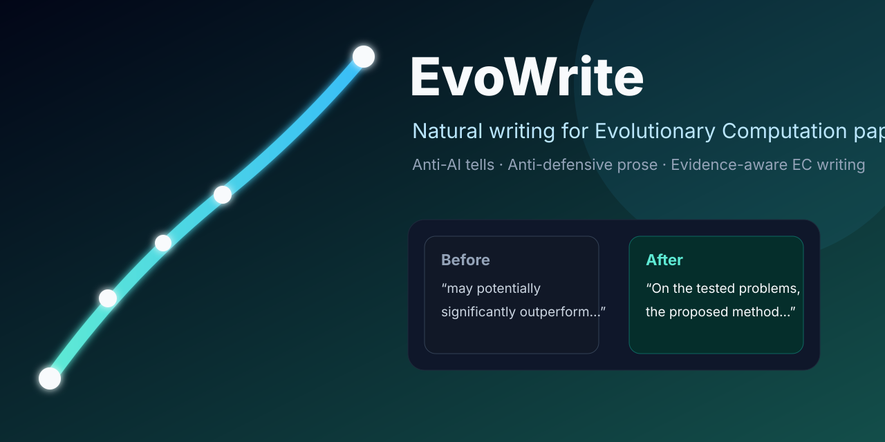

EvoWrite
Natural, evidence-aware writing for EC papers.
Distilled from 1,517 TEVC papers (1997–2023). EvoWrite removes AI tells and defensive prose while preserving claims, evidence, EC terminology, and your voice.

Anti-AI tellsAnti-defensive proseEC claim calibrationVoice matchingSee what changes
Real behavior from the public verification path: fewer AI tells, no defensive disclaimer, and no invented evidence.
Before
With the rapid development of evolutionary computation, large-scale multiobjective optimization has become a hot topic. It is worth noting that our proposed method may potentially significantly outperform state-of-the-art algorithms, although we do not claim that it is universally optimal for all problems.
After
Large-scale multiobjective optimization remains challenging for evolutionary algorithms as the number of decision variables increases. On the tested problems, the proposed algorithm outperforms the state-of-the-art algorithms included in the comparison.
Four ways to use it
Rewrite
Remove AI tells, boilerplate, repetitive transitions, and defensive framing from an existing EC draft.
Draft
Turn research notes into prose without inventing baselines, citations, statistics, or outcomes.
Voice match
Match sentence rhythm, terminology, punctuation, and directness from your own writing sample.
Audit
Check significance, robustness, scalability, efficiency, optimality, and cost claims only when requested.
Built for EC evidence
A generic humanizer can make prose smoother. EvoWrite also checks whether the claim belongs to the right EC evidence category.
multiobjectivemany-objectiveconstraineddynamicexpensivesurrogate-assistedlarge-scalemultimodalcombinatorialneuroevolution
Install in under a minute
Skills CLI
npx skills add Wenhua-Li/evo-writing-skillBash
curl -fsSL https://raw.githubusercontent.com/Wenhua-Li/evo-writing-skill/main/install.sh | bashWhy not just use a generic humanizer?
| Generic humanizer | EvoWrite |
|---|---|
| Removes general AI tells | Removes general and EC-specific AI tells |
| Keeps prose factual | Keeps prose factual and technically calibrated for EC |
| No cost model | Distinguishes FEs, wall-clock runtime, model-training cost, and complexity |
| One style for every field | Supports algorithm, theory, benchmark, survey, and application papers |
Evidence, not vibes
TEVC evidence window
quality-controlled papers used for language analysis
public package contains aggregate evidence and original guidance
EvoWrite is independent of IEEE and TEVC editorial policy. It does not guarantee publication or AI-detector outcomes.
FAQ
Does EvoWrite try to bypass AI detectors?
No. The goal is natural prose for human reviewers, not detector evasion.
Does the public repository include TEVC papers?
No. It includes aggregate statistics, scripts, original rules, examples, and templates—not the source papers.
Will it invent missing experiments or citations?
No. Unsupported claims are removed, narrowed, or listed as missing information outside the paper text.